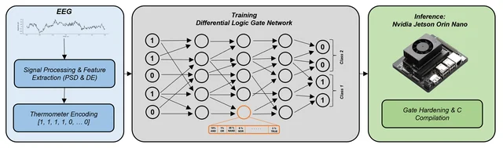

Differentiable Logic Gate Networks for Low-Latency EEG Classification on Edge Devices
Canadian AI Conference, 2026 · Best Paper Award · Oral
Compiles EEG classifiers into Boolean circuits that run on bitwise CPU operations: 80.2% macro-F1 on dementia screening (6.8% above a matched MLP) and up to 2.9× faster inference on a 7 W Jetson Orin Nano.